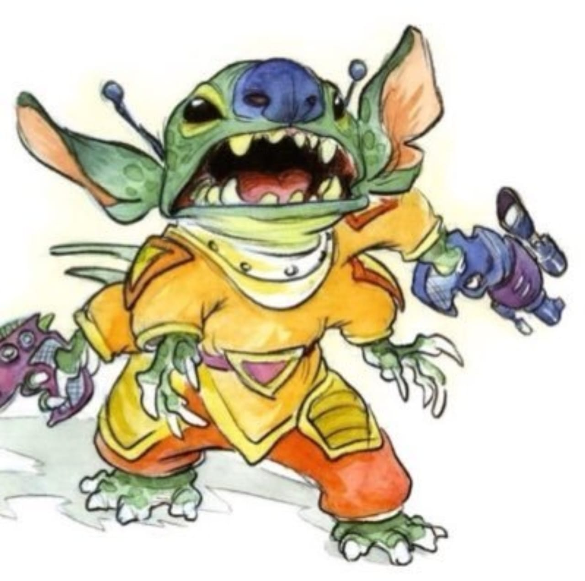
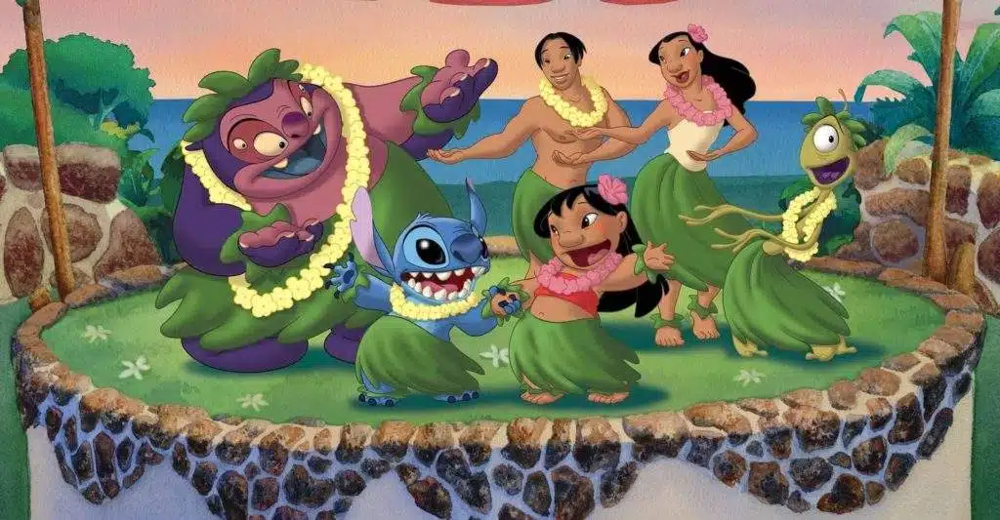

Curiosidades
Lo que quizás no sabías sobre la creación de Experimento 626.

Dibujo Original de Stitch: El diseño inicial de Stitch era mucho más salvaje y menos adorable. Fue evolucionando para ser más "lindo" para la audiencia infantil.

Ubicación Real: La película se desarrolla en la isla de Kauaʻi, una de las islas más verdes y hermosas de Hawái.

Referencia a Elvis: Lilo es una gran fanática de Elvis Presley porque su personaje representaba un puente entre el rock and roll y la cultura hawaiana.

Ohana: La famosa frase "Ohana significa familia, y la familia nunca te abandona ni te olvida".